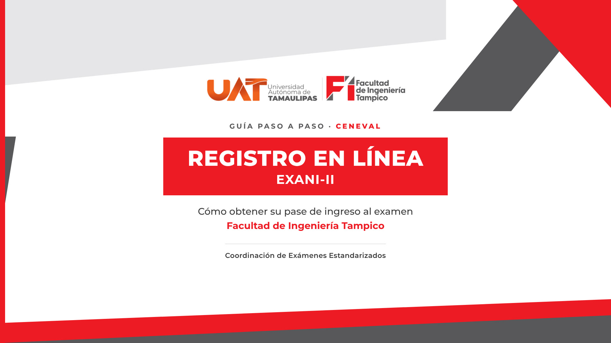
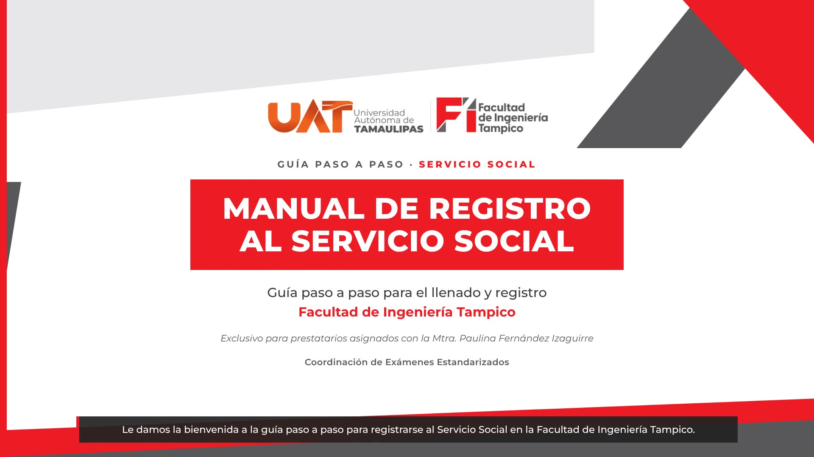
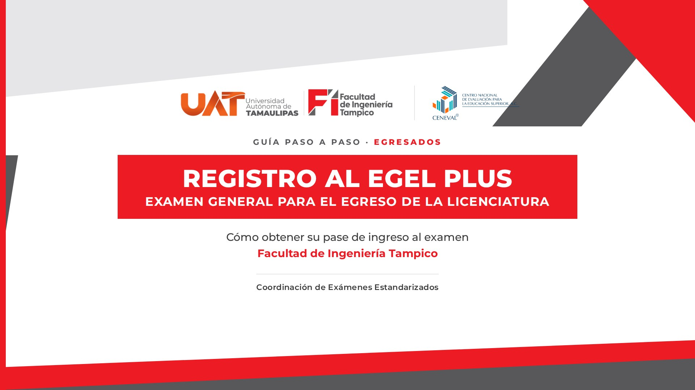

Guías en video · Paso a paso
ELIJA SU TRÁMITE
Cada guía tiene un video con voz y subtítulos, los enlaces oficiales y el contacto para dudas.

2:25Aspirantes
Registro en línea al EXANI-II
Obtenga su pase al examen de ingreso de CENEVAL.
Ver la guía →
2:08Alumnos
Registro al Servicio Social
Para quienes realizan su Servicio Social con la Mtra. Paulina Fernández Izaguirre.
Ver la guía →
4:13Egresados
Registro al EGEL Plus
Obtenga su pase al Examen General para el Egreso de la Licenciatura.
Ver la guía →